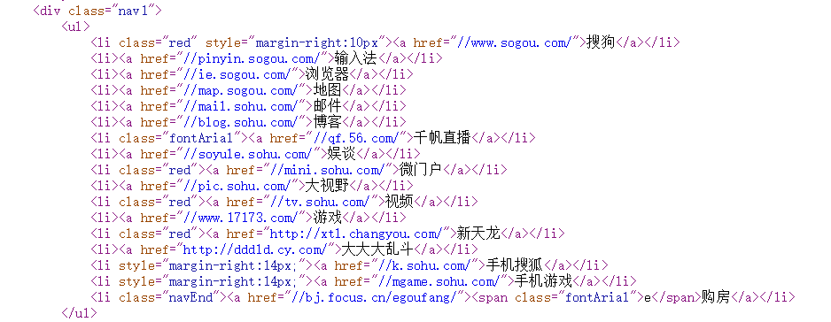
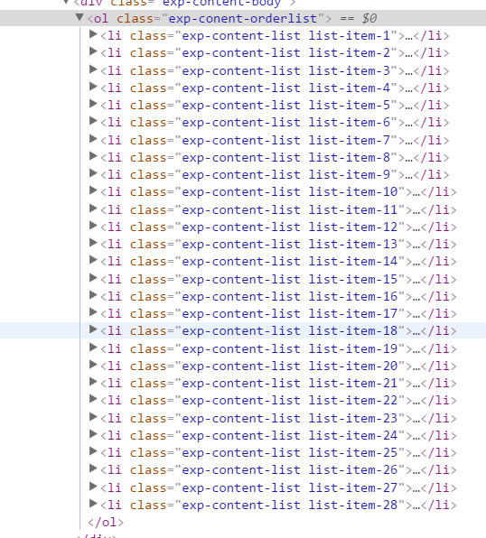
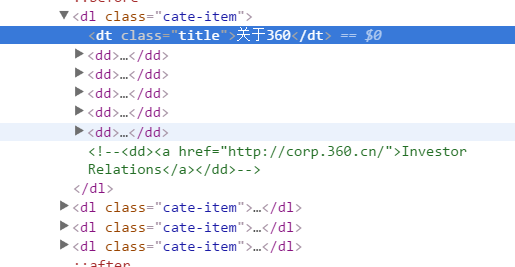

这是搜狐网
在网页顶部的导航位置发现ul无序列表元素，在每个网站基本都能发现十分频繁
这是百度提问里的一个网站，网址忘记复制找不到了...
ol元素比较容易在有指定顺序排列出来的网站中发现，一般在网页中发现按照一定步骤排列出来的，基本上都能发现ol有序列表元素
相比ul元素ol元素比较难找
这是360官网
在网站的底部位置发现dl元素
dl元素在一定时间的寻找后，我初步认为在一些具有固定模块位置的网站比较好找。通俗的说就是在一个大标题下包含了许多小分支，但他们属于同一块内容